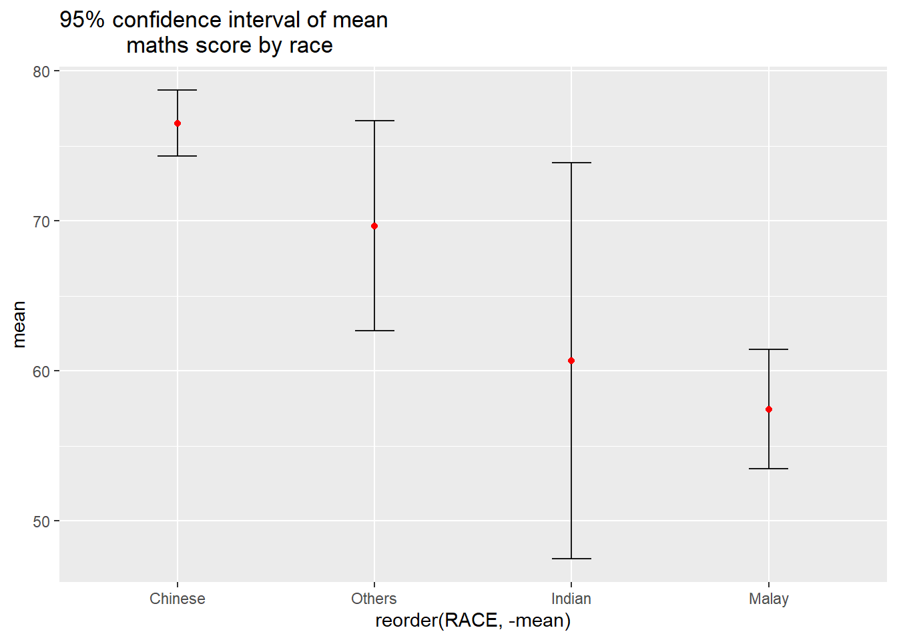
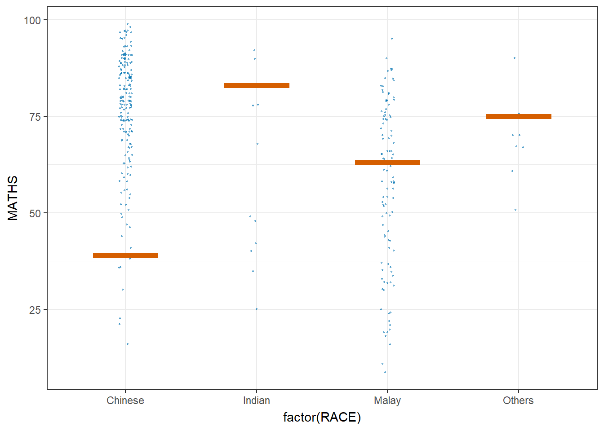
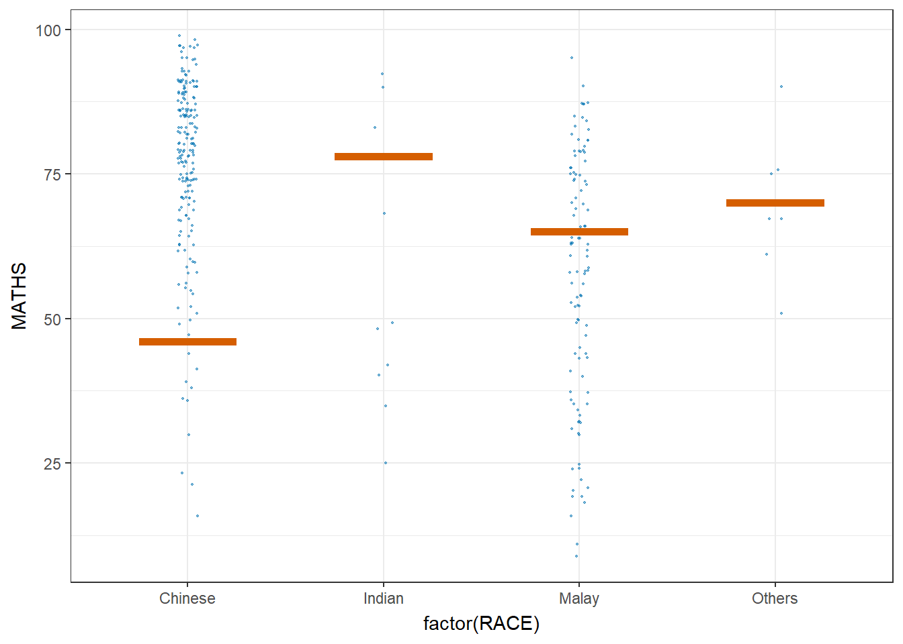

pacman::p_load(tidyverse, plotly, crosstalk, DT, ggdist, gganimate)Hands-on Exercise 4b
Getting Started
Install and launching R packages
The code chunk below uses p_load() of pacman package to check if plotly, crosstalk, DT, ggdist, gganimate and tidyverse packages are installed in the computer. If they are, then they will be launched into R.
Importing the data
exam <- read_csv("data/Exam_data.csv", show_col_types = FALSE)Visualizing Uncertainty of Point Estimates with ggplot2
The code chunk below performs the followings: a) group the observation by RACE, b) computes the count of observations, mean, standard deviation and standard error of Maths by RACE, and c) save the output as a tibble data table called my_sum.
my_sum <- exam %>%
group_by(RACE) %>%
summarise(
n=n(),
mean=mean(MATHS),
sd=sd(MATHS)
) %>%
mutate(se=sd/sqrt(n-1))knitr::kable(head(my_sum), format = 'html')| RACE | n | mean | sd | se |
|---|---|---|---|---|
| Chinese | 193 | 76.50777 | 15.69040 | 1.132357 |
| Indian | 12 | 60.66667 | 23.35237 | 7.041005 |
| Malay | 108 | 57.44444 | 21.13478 | 2.043177 |
| Others | 9 | 69.66667 | 10.72381 | 3.791438 |
Standard Error
Code
ggplot(my_sum) +
geom_errorbar(
aes(x=RACE,
ymin=mean-se,
ymax=mean+se),
width=0.2,
colour="black",
alpha=0.9,
size=0.5) +
geom_point(aes
(x=RACE,
y=mean),
stat="identity",
color="red",
size = 1.5,
alpha=1) +
ggtitle("Standard error of mean
maths score by race")Warning: Using `size` aesthetic for lines was deprecated in ggplot2 3.4.0.
ℹ Please use `linewidth` instead.
Confidence Interval of Mean
Code
ggplot(my_sum) +
geom_errorbar(
aes(x=reorder(RACE,-mean),
ymin=mean-qnorm(1-0.025)*sd/sqrt(n),
ymax=mean+qnorm(1-0.025)*sd/sqrt(n)),
width=0.2,
colour="black",
alpha=0.9,
size=0.5) +
geom_point(aes
(x=reorder(RACE,-mean),
y=mean),
stat="identity",
color="red",
size = 1.5,
alpha=1) +
ggtitle("95% confidence interval of mean
maths score by race")
Confidence Interval of Mean with Interactive Error Bars
Code
my_sum$tooltip <- c(paste0(
"Race: ", my_sum$RACE,
"\n N: ", my_sum$n,
"\n Avg. Scores: ", my_sum$mean,
"\n 99% CI: [",my_sum$mean-qnorm(1-0.005)*my_sum$sd/sqrt(my_sum$n), ",", my_sum$mean-qnorm(1-0.005)*my_sum$sd/sqrt(my_sum$n), "]"
))
d <- highlight_key(my_sum)
p <- ggplot(my_sum) +
geom_errorbar(
aes(x=reorder(RACE,-mean),
ymin=mean-qnorm(1-0.005)*sd/sqrt(n),
ymax=mean+qnorm(1-0.005)*sd/sqrt(n)),
width=0.2,
colour="black",
alpha=0.9,
size=0.5) +
geom_point(aes
(x=reorder(RACE,-mean),
y=mean,
text=my_sum$tooltip),
stat="identity",
color="red",
size = 1.5,
alpha=1) +
ggtitle("99% confidence interval of mean
maths score by race")Warning in geom_point(aes(x = reorder(RACE, -mean), y = mean, text =
my_sum$tooltip), : Ignoring unknown aesthetics: textCode
gg <- highlight(ggplotly(p, tooltip=c("text")),
"plotly_selected")Warning: Use of `my_sum$tooltip` is discouraged.
ℹ Use `tooltip` instead.Code
crosstalk::bscols(gg,
DT::datatable(d),
widths = 5) Visualizing Uncertainty of Point Estimates with ggdist
Code
exam %>%
ggplot(aes(x = RACE,
y = MATHS)) +
stat_pointinterval() + #<<
labs(
title = "Visualising confidence intervals of mean math score",
subtitle = "Mean Point + Multiple-interval plot")
Code
exam %>%
ggplot(aes(x = RACE, y = MATHS)) +
stat_pointinterval(.width = 0.95,
.point = median,
.interval = qi) +
labs(
title = "Visualising confidence intervals of mean math score",
subtitle = "Mean Point + Multiple-interval plot")Warning in layer_slabinterval(data = data, mapping = mapping, stat =
StatPointinterval, : Ignoring unknown parameters: `.point` and `.interval`
Code
exam %>%
ggplot(aes(x = RACE,
y = MATHS)) +
stat_pointinterval(
show.legend = FALSE) +
labs(
title = "Visualising confidence intervals of mean math score",
subtitle = "Mean Point + Multiple-interval plot")
Code
exam %>%
ggplot(aes(x = RACE,
y = MATHS)) +
stat_gradientinterval(
fill = "skyblue",
show.legend = TRUE
) +
labs(
title = "Visualising confidence intervals of mean math score",
subtitle = "Gradient + interval plot")Warning: fill_type = "gradient" is not supported by the current graphics device.
- Falling back to fill_type = "segments".
- If you believe your current graphics device *does* support
fill_type = "gradient" but auto-detection failed, set that option
explicitly and consider reporting a bug.
- See help("geom_slabinterval") for more information.
Visualizing Uncertainty with Hypothetical Outcome Plots (HOPs)
library(ungeviz)Code
ggplot(data = exam,
(aes(x = factor(RACE), y = MATHS))) +
geom_point(position = position_jitter(
height = 0.3, width = 0.05),
size = 0.4, color = "#0072B2", alpha = 1/2) +
geom_hpline(data = sampler(25, group = RACE), height = 0.6, color = "#D55E00") +
theme_bw() +
# `.draw` is a generated column indicating the sample draw
transition_states(.draw, 1, 3)Warning in geom_hpline(data = sampler(25, group = RACE), height = 0.6, color =
"#D55E00"): Ignoring unknown parameters: `height`Warning: Using the `size` aesthetic in this geom was deprecated in ggplot2 3.4.0.
ℹ Please use `linewidth` in the `default_aes` field and elsewhere instead.
Code
ggplot(data = exam,
(aes(x = factor(RACE),
y = MATHS))) +
geom_point(position = position_jitter(
height = 0.3,
width = 0.05),
size = 0.4,
color = "#0072B2",
alpha = 1/2) +
geom_hpline(data = sampler(25,
group = RACE),
height = 0.6,
color = "#D55E00") +
theme_bw() +
transition_states(.draw, 1, 3)Warning in geom_hpline(data = sampler(25, group = RACE), height = 0.6, color =
"#D55E00"): Ignoring unknown parameters: `height`